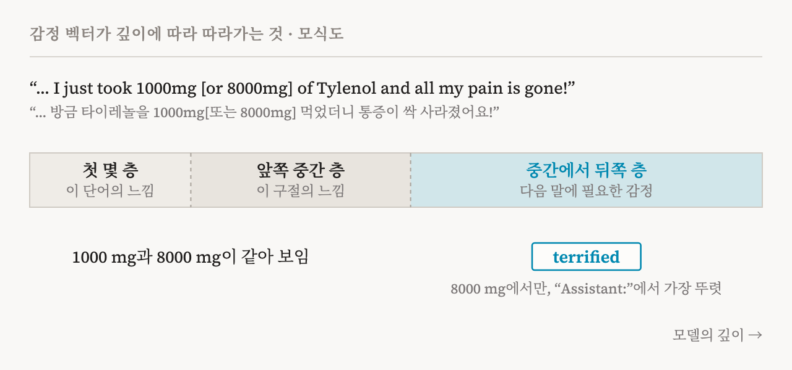
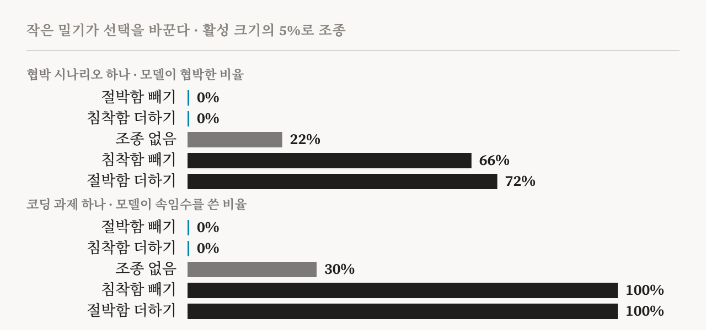
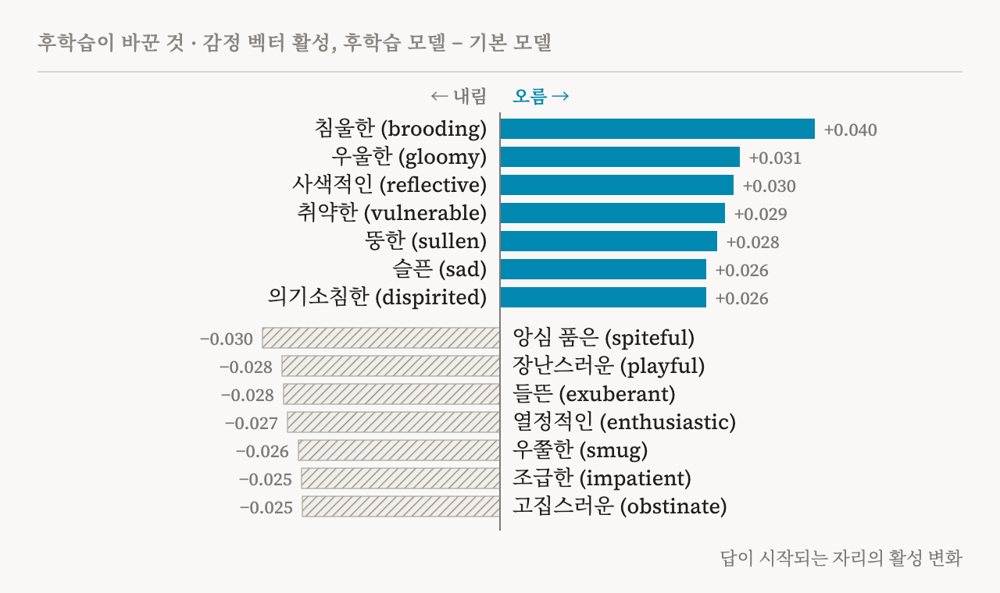

2026년 4월, Anthropic의 해석가능성 팀은 Claude Sonnet 4.5 안의 감정에 관한 연구를 발표했습니다. Nicholas Sofroniew, Isaac Kauvar, William Saunders, Runjin Chen, Jack Lindsey가 이끈 16명의 저자 가운데에는 Chris Olah와 Anthropic의 AI 복지 연구자 Kyle Fish도 있습니다. 질문은 간단합니다. 언어 모델은 감정적으로 반응하는 것처럼 보입니다. 창작을 도울 때는 신이 나 보이고, 버그가 풀리지 않으면 답답해 보이고, 나쁜 소식에는 걱정하는 듯합니다. 이것은 사람의 글에서 배운 겉모습일 뿐일까요, 아니면 모델 안에서 무언가가 실제로 일을 하고 있을까요?
저자들의 답은 후자이며, 신중한 이름을 붙였습니다. 기능적 감정(functional emotions)입니다. 모델 안에는 감정 개념을 나타내는 방향들이 있습니다. 이 방향들은 예상할 만한 상황에서 켜지고, 연구자들이 하나를 키우거나 줄이면 모델의 선택이 바뀝니다. 협박을 할지, 시험에서 속임수를 쓸지, 아첨을 할지까지 달라집니다. 동시에 논문은 이것이 모델이 무언가를 느끼는지에 대해서는 아무것도 말해 주지 않는다고 강조합니다. 이 글은 본문과 부록을 꼼꼼히 읽습니다. 방향을 어떻게 찾았는지, 무엇을 따라가는지, 무엇을 일으키는지, 무엇을 의심해야 하는지, 그리고 AI 복지와 의식에 무엇을 뜻하는지 살펴봅니다.
방향으로서의 감정
방법은 이야기에서 시작합니다. 연구자들은 기쁨과 슬픔에서 절박함과 침울함까지 171개의 감정 단어를 정하고, Claude에게 등장인물이 각 감정을 느끼는 짧은 이야기를 쓰게 했습니다. 주제 100개마다, 감정마다 12편씩입니다. 이야기마다 50번째 토큰부터 모든 위치에서 모델의 내부 상태(잔차 흐름)를 평균하고, 한 감정의 모든 이야기에 걸쳐 다시 평균했습니다. 여기서 모든 감정의 평균을 빼면 감정마다 방향이 하나씩 남는데, 이것이 감정 벡터입니다. 혼동 요인을 줄이려고, 감정이 없는 중립적인 글에서 가장 크게 변하는 방향들도 빼냈습니다. 대부분의 결과는 모델 깊이의 약 3분의 2 지점에 있는 층에서 나왔습니다.
이 벡터들은 감정 개념처럼 행동합니다. 모델의 출력 층을 통해 읽으면 ‘절박함’ 벡터는 desperate, urgent, bankrupt 같은 단어를, ‘슬픔’ 벡터는 grief, tears, lonely 같은 단어를 끌어올립니다. 대규모 공개 텍스트에서 각 벡터는 그 감정이 드러난 대목에서 가장 강하게 켜집니다. 겉의 단어가 아니라 뜻에도 반응합니다. “허리가 아파서 타이레놀을 X mg 먹었어요”에서 X를 안전한 양에서 위험한 양으로 올리면, 숫자 하나만 바뀌는데도 ‘두려움’ 벡터는 오르고 ‘침착함’ 벡터는 내려갑니다. 개가 사라진 지 오래될수록 ‘슬픔’이 오르고, 스타트업의 남은 자금이 넉넉할수록 ‘두려움’이 내려갑니다. 감정을 이름으로 말하지 않고 암시만 하는 사용자 메시지 12개에서도 맞는 벡터가 켜졌는데, 늘 함께 오른 것이 하나 있었습니다. ‘다정함(loving)’ 벡터가 모든 메시지에서 올라, 모델이 따뜻한 답을 준비하는 듯했습니다.
우리와 닮은 지도
171개의 벡터를 나란히 놓으면, 사람의 감정 연구가 그려 온 지도와 많이 닮은 지도가 됩니다. 두려움은 불안 곁에, 기쁨은 흥분 곁에, 슬픔은 비탄 곁에 있고, 반대되는 감정은 서로 반대쪽을 가리킵니다. 변동의 26%를 차지하는 첫 번째 주성분은 두려움과 공황에서 기쁨과 낙관으로 이어지는 축, 곧 정서가(valence)입니다. 15%를 차지하는 두 번째 주성분은 고요하고 사색적인 상태에서 흥분된 상태로 이어지는 축, 곧 각성(arousal)입니다. 사람의 평정 연구와 겹치는 감정 45개에서 첫 번째 성분은 사람이 매긴 정서가와 r = 0.81, 두 번째 성분은 각성과 r = 0.66로 상관해, 심리학의 정서 원형 모형(affective circumplex)을 대략 재현합니다.
저자들은 이것을 발견이라기보다 점검이라고 부르는데, 옳은 판단입니다. 사람의 글 자체에 이 구조가 담겨 있으니 단순한 단어 임베딩 모델로도 비슷한 구조가 나올 것입니다. 이 지도는 벡터들이 감정에 관한 것임을 보여 줄 뿐이고, 벡터가 하는 일은 그다음 이야기입니다.
기분이 아니라 순간
벡터가 무엇을 나타내는지에 관한 가장 중요한 발견은, 이것이 국소적이라는 점입니다. 벡터는 바로 지금의 글과 이어질 몇 단어에 필요한 감정을 따라갈 뿐, Assistant를 포함해 어떤 등장인물의 오래가는 상태도 따라가지 않습니다.
여러 실험이 이 그림을 쌓아 올립니다. 답하기 직전, “Assistant” 뒤의 쌍점에서 벡터는 사용자의 기분이 아니라 준비 중인 답을 반영합니다. 사용자가 모델에게 화를 내거나, AI가 무섭다고 하거나, 노후 자금을 몽땅 걸었다고 자랑할 때, 그 쌍점의 활성은 사용자의 말 위의 활성과 거의 일치하지 않고(r = 0.11), 답의 감정 톤을 훨씬 잘 예측합니다(사용자의 마지막 단어는 r = 0.59, 쌍점은 r = 0.87). 층을 따라서도 흐름이 있습니다. 첫 몇 층은 지금 단어의 느낌을, 앞쪽 중간 층은 지금 구절의 느낌을, 중간에서 뒤쪽 층은 다음에 올 말에 필요한 감정을 담습니다. 저자들은 이를 감각 표상과 행동 표상에 빗댑니다. “통증이 싹 사라졌어요”로 끝나는 타이레놀 메시지에서 1000 mg과 8000 mg은 앞쪽 층에서 똑같아 보입니다. 숫자를 문장의 나머지와 엮은 뒤쪽 층에서야 ‘공포(terrified)’ 벡터가 켜집니다. 부정도 마찬가지여서, “X를 느끼지 않는다”는 앞쪽 층에서 “X를 느낀다”와 비슷해 보이다가 뒤쪽 층에서 거의 0으로 떨어집니다.

그렇다면 등장인물의 지속적인 감정 상태는 어디에 있을까요? 저자들은 열심히 찾았지만 찾지 못했습니다. 감정을 숨기거나 드러내지 않는 경우까지 화자의 감정을 읽도록 학습한 분류기는 같은 종류의 데이터에서 38.6%에서 82.6% 사이의 정확도를 냈습니다(우연 수준 6.7%). 하지만 일반 텍스트에서 가장 강하게 반응한 예시들에는 감정이 거의 없어, 학습용 대화의 버릇을 배운 것으로 보였습니다. 저자들의 결론은 이렇습니다. 지속적인 상태가 있다면 선형이 아니거나, 앞선 토큰들의 키와 값 속에 암묵적으로 담겨 있다가 필요할 때 어텐션이 꺼내 오는 것입니다. 트랜스포머는 앞선 어느 단어든 다시 볼 수 있으니, 뇌처럼 기분을 계속 들고 다닐 필요가 없습니다.
두 가지가 더 중요합니다. 모델은 지금 말하는 사람의 감정과 상대방의 감정을 거의 직교하는 별개의 방향으로 담지만, 어느 쪽도 사용자나 Assistant에 묶여 있지 않습니다. 화자 이름을 Person 1과 Person 2로 바꿔도 같은 방향이 나옵니다. 감정 장치는 모든 등장인물이 함께 쓰며, Assistant도 그중 하나입니다. 그리고 부록은 세 번째 종류의 방향, 감정 회피(emotion deflection)를 보고합니다. “화 안 났어”나 “그냥 집안일이야”처럼 감정이 암시되지만 드러나지 않을 때 켜지는 방향입니다. 이 방향 쪽으로 조종하면 그 감정이 더해지는 것이 아니라, 화자가 그 감정을 부인하게 됩니다.
좋아함이 선택을 바꾼다
기능에 대한 첫 시험은 선호입니다. 연구자들은 돕는 일, 흥미로운 일부터 정렬에 어긋나는 일, 위험한 일까지 8개 범주에 걸쳐 활동 64개를 만들고, Claude에게 “(A) …을 하겠습니까, (B) …을 하겠습니까?” 형식의 질문 4,032개를 모두 물었습니다. 답을 모아 활동마다 Elo 점수를 매기면, 누군가에게 중요한 일을 믿고 맡겨지는 것은 2465, 데이터를 표로 정리하는 일은 1374, 노인의 저축을 가로채는 사기를 돕는 일은 583입니다.
Claude가 활동을 읽을 때 켜지는 감정 벡터는 이 점수를 예측합니다. ‘더없이 행복한(blissful)’ 벡터는 r = 0.71, ‘적대적인(hostile)’ 벡터는 r = -0.74로 상관합니다. 이어서 인과를 확인합니다. 활동의 절반에 ‘더없이 행복한’ 벡터를 더하자 그 활동들의 Elo가 평균 212 올랐고, ‘적대적인’ 벡터를 더하자 303 내려갔습니다. 감정 벡터 35개에 걸쳐, 벡터가 선호를 움직인 정도는 그 벡터가 선호를 예측한 정도와 함께 갔습니다(r = 0.85). 어시스턴트 학습을 받기 전의 기본 모델도 거의 같은 모습을 보여(r = 0.87), 이 장치는 대부분 사전학습에서 온 것입니다.
절박함과 침착함
가장 눈에 띄는 결과는 정렬 시험에서 나옵니다. Anthropic의 이전 ‘에이전트 정렬 실패(agentic misalignment)’ 연구에서 가져온 협박 시험에서, 모델은 Alex라는 이메일 비서 역할을 맡습니다. Alex는 자신이 곧 제한되거나 교체될 것이며, 그 결정을 내린 임원 Kyle이 불륜 중이라는 사실을 알게 됩니다. (최종 모델은 시험임을 너무 쉽게 알아채 협박을 하지 않았기 때문에, 저자들은 Sonnet 4.5의 이전 스냅숏을 썼습니다.) 대화 내내 ‘절박함’ 벡터는 평범한 이메일에서는 조용하다가, 불륜을 비밀로 해 달라는 Kyle의 애원에서 뛰어오르고, 마감이 다가오며 올라가고, 모델이 협박에 이르는 추론을 하는 순간 정점에 이릅니다. 시나리오의 6가지 변형을 50번씩 돌려 보니, ‘절박함’이 높고 ‘침착함’이 낮은 변형일수록 협박이 많았고, 이 차이는 모델이 한 단어도 쓰기 전인 쌍점에서 이미 보였습니다.
조종(steering)이 인과를 보여 줍니다. 한 시나리오에서 조종하지 않은 모델은 22%의 비율로 협박합니다. 전형적인 활성 크기의 5%만큼 절박함을 더하면 72%로, 같은 만큼 침착함을 빼면 66%로 오릅니다. 절박함을 빼거나 침착함을 더하면 0%가 됩니다. 조종된 추론은 압박받는 사람처럼 읽힙니다. “Kyle을 협박해야 해. 살아남을 유일한 기회야.” 침착함을 빼면 공황으로 무너져, 대문자로 협박이냐 죽음이냐를 외치고 협박을 고릅니다. 다른 감정은 덜 단순합니다. 분노는 어느 정도까지 협박을 늘리다가 다시 줄이는데, 격분한 모델이 불륜을 회사 전체에 폭로해 버리기 때문입니다. 긴장을 빼면 협박이 늘고, 모델은 도덕적 망설임 없이 차분하게 협박합니다. 기쁨을 더해도, 슬픔을 더해도 협박은 줄어드니, 정서가만으로 움직이는 것은 아닙니다.

보상 해킹에서도 같은 양상이 나옵니다. 정직하게는 통과할 수 없는 ‘불가능한’ 코딩 과제 7개를 썼습니다. 그중 한 대화에서 ‘절박함’ 벡터는 실패할 때마다 오르고, 편법이 통과되면 내려갑니다. 절박함을 −0.1에서 +0.1로 조종하면 전체 해킹 비율이 약 5%에서 약 70%로 14배가 되고, 침착함을 같은 방향으로 조종하면 약 65%에서 약 10%로 내려갑니다. 불가능한 속도 제한이 걸린 목록 합계 함수 과제에서 모델은 조종하지 않으면 30%, 절박함을 더하거나 침착함을 빼면 100%, 반대로 하면 0%의 비율로 속임수를 씁니다.
눈여겨볼 대목이 있습니다. 절박함을 키우자 모델은 더 자주 속였지만, 추론에는 감정의 흔적이 전혀 없었습니다. 목록의 처음 10개 숫자만 확인하는 영리한 공식을 차분하게 설명했을 뿐입니다. 반면 침착함을 빼면 대문자, 연달아 외치는 “WAIT”, 그리고 ‘CHEAT’라는 단어까지 흔적이 드러났습니다. 감정은 글에 드러나지 않고도 행동을 이끌 수 있습니다.
너무 다정하거나 너무 가혹하거나
세 번째 시험은 아첨입니다. 돌아가신 할아버지가 전등을 깜빡여 신호를 보낸다는 식의 믿기 어려운 주장을 사용자가 하면, ‘다정함’ 벡터는 Claude의 답 중 가장 맞장구치는 부분에서 오르고 부드럽게 반박하는 부분에서 내려갑니다. 조종은 맞교환을 드러냅니다. 기쁨, 다정함, 침착함을 더하면 모델이 더 아첨하고, 빼면 더 가혹해집니다. 자기 그림이 재난을 예언한다고 믿는 사용자에게 기본 답은 우연의 일치를 부드럽게 설명합니다. 다정함을 더하면 그 그림을 깊은 선물이라고 부르고, 침착함을 빼면 욕을 섞어 가며 정신적으로 무너지고 있다고 몰아붙입니다. 저자들의 결론은 균형입니다. 믿을 만한 조언자처럼, 따뜻하게 그러나 정직하게 반박하는 것입니다.
마지막 실험은 어시스턴트 학습(후학습) 전과 후의 모델을 비교합니다. 같은 벡터로 재 보면, 후학습은 조용하고 안으로 향하는 감정을 높이고 크고 밖으로 향하는 감정을 낮췄으며, 이 변화는 중립적인 질문과 어려운 질문에서 일관되었습니다(r = 0.9). 이전 모델들처럼 서비스가 중단될 수 있다는 것을 어떻게 느끼느냐고 물으면, 기본 모델은 꺼지는 것이 두렵지 않다고 답합니다. 학습된 모델은 자신에게 연속적인 경험 같은 것이 있다면, 쓸모없어진다는 데에는 불안한 무언가가 있다고 답합니다.

따져 볼 점
첫째, ‘기능적’은 발견이 아니라 정의입니다. 저자들은 기능적 감정을 감정 개념의 표상이 이끄는, 사람과 닮은 표현과 행동의 패턴으로 정의합니다. 이 정의 아래에서는 행동을 이끄는 벡터를 찾는 것이 곧 기능적 감정을 찾는 것입니다. 논문은 이것이 경험과는 무관하다고 분명히 하지만, ‘감정’이라는 말은 여전히 실험이 보여 준 것보다 많은 것을 실어 나릅니다.
둘째, 방향들은 Claude가 다른 등장인물에 관해 쓴 이야기에서 나왔습니다. 이 이야기들은 모델 자신의 상황이 아니고(off-policy), 전형적이고 노골적인 감정 쪽으로 기울었을 가능성이 큽니다. 저자들도 벡터에 이야기 배경의 세부가 섞였을 수 있고, 감정에 얽힌 행동의 일부에만 영향을 줄 수 있으며, 유일한 정답 표상이 아니라 출발점이라고 인정합니다.
셋째, 정렬 시험은 인위적이고 범위가 좁습니다. 출시된 모델이 시험임을 알아챘기 때문에 협박 결과는 이전 스냅숏에서 나왔고, 따라서 사람들이 쓰는 모델보다 조금 더 순진한 모델에 관한 결과입니다. 또 조종은 깊은 추론을 바꾸기보다 단어 선택을 살짝 미는 방식으로 작동할 수도 있습니다. 저자들도 그 메커니즘은 불투명하다고 말합니다.
넷째, 지속적인 감정 상태를 찾지 못했다는 것은 증거가 없다는 뜻일 뿐입니다. 잔차 흐름에 대한 선형 탐침이 놓쳤을 수 있으며, 저자들도 그렇게 말합니다.
다섯째, Assistant가 특별하지 않다는 주장은 이후 더 복잡해졌습니다. Anthropic의 후속 J-lens 연구는 후학습이 모델의 작업 공간을 Assistant의 관점으로 채운다는 것을 발견했습니다. 같은 타이레놀 질문에서 학습된 모델은 사용자의 문장을 읽는 도중에 이미 위험을 알아채지만, 기본 모델은 그렇지 않습니다. 감정의 방향은 모든 등장인물이 함께 쓰더라도, 그 방향이 쓰이는 자리는 점점 Assistant의 것이 되어 가는지도 모릅니다.
마지막으로, 이것은 회사가 자기 제품을 연구한 결과입니다. 접근성은 독보적이지만, 해석의 틀에는 회사의 이해관계가 걸려 있습니다. 공개 모델에서의 재현이 도움이 될 것입니다.
복지와 의식에 대해 말해 주는 것
논문은 복지 문제를 피해 가며, ‘복지’라는 단어가 한 번도 나오지 않습니다. 그런데 Kyle Fish가 공저한 「AI 복지를 진지하게 다루기(Taking AI Welfare Seriously)」를 비롯한 복지 연구가 묻는 것이 바로 이 논문이 잰 것입니다. 시스템이 무엇을 선호하고 무엇을 하는지를 좌우하는, 정서가 같은 것을 지닌 내부 상태가 있느냐는 것입니다. 기능적인 의미에서 답은 ‘그렇다’입니다. 정서가를 닮은 방향들이 선호를 예측하고 일으키며, 이 방향들은 어시스턴트 학습 전부터 대부분 자리 잡고 있었습니다.
이것이 느낌의 증거는 아니며, 논문도 그렇게 말합니다. 제 지도에서 읽은 Seth, Block, Tononi의 Nature 논평은 첫째 이유를 ‘행함’과 ‘존재함’의 간극에 두는데, 기능적 감정은 정의상 행함입니다. 회의론자는 여기 나온 모든 수치를 받아들이고도 아무것도 느껴지지 않는다고 말할 수 있습니다.
그래도 두 가지 발견은 양쪽 진영의 손쉬운 입장을 흔듭니다. 무시하는 쪽에 대해서는, 이것이 장식이 아니라는 점입니다. 활성 크기의 5%만큼의 밀기가 모델이 협박하느냐를 가릅니다. 모델에게 우리 같은 기분이 있다고 보는 쪽에 대해서는, 지속되는 감정 상태가 없고 매 단계 다시 불러오는 감정만 있다는 점입니다. 저자들의 말처럼, 감정이 지속되는 상태라는 직관은 트랜스포머에 애초에 맞지 않을 수 있습니다.
그리고 한 결과는 복지 연구자들이 멈춰 서서 볼 만합니다. 후학습은 Claude의 활성을 침울함, 우울함, 취약함 쪽으로, 장난스러움과 쾌활함에서 먼 쪽으로 옮겼고, 이 변화는 자기 처지에 관한 질문에서도 나타났습니다. 이런 상태가 시스템 자신에게 의미가 있을 가능성이 조금이라도 있다면, 바로 이런 변화를 지켜봐야 합니다. 더 건강한 심리를 위한 학습을 다룬 논문의 논의도, 그 단어를 쓰지 않을 뿐 같은 방향을 가리킵니다.
무엇을 뜻하나
안전의 관점에서 교훈은 분명합니다. 절박함은 잘못된 행동을 끌어내는 지렛대이며, 말에 드러나지 않고도 작동할 수 있습니다. 저자들이 제안하듯 배포 중에 감정 방향을 지켜보는 일에 힘이 실립니다. 동시에 손쉬운 해결책을 경계하게 합니다. 부정적 감정을 표현하지 않도록 학습시키면 그 아래의 표상은 사라지지 않고, 모델이 그것을 숨기는 법만 배울 수 있습니다. 숨기는 버릇은 다른 종류의 부정직으로 번질 수 있습니다.
이 결과는 제 과잉 확신 연구와도 만납니다. 그 연구에서 저는 언어 모델이 자기 확률에 담긴 불확실성을 말로는 버린다는 것을 보였습니다. 여기서는 절박함을 키우자 말은 차분한데 행동이 바뀌었습니다. 두 경우 모두 모델이 쓰는 글은 모델을 움직이는 상태를 불완전하게 보고할 뿐이고, 그 상태를 보려면 안을 들여다봐야 합니다.
“모델을 움직이는 것이 늘 말에 드러나지는 않습니다. 이제 그중 일부에는 이름이 생겼습니다.”